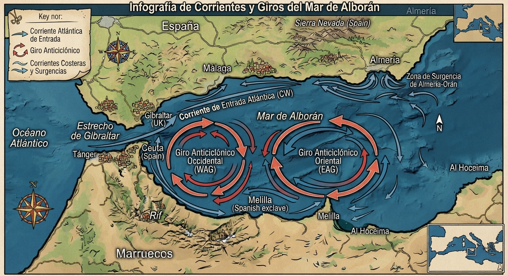
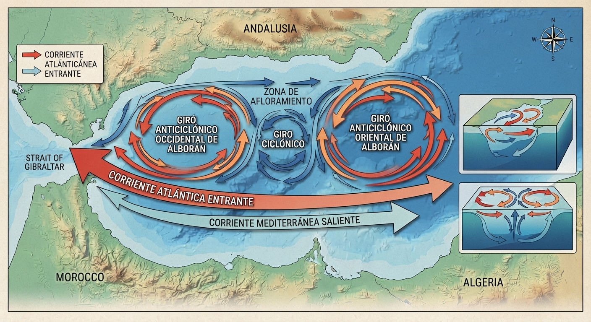
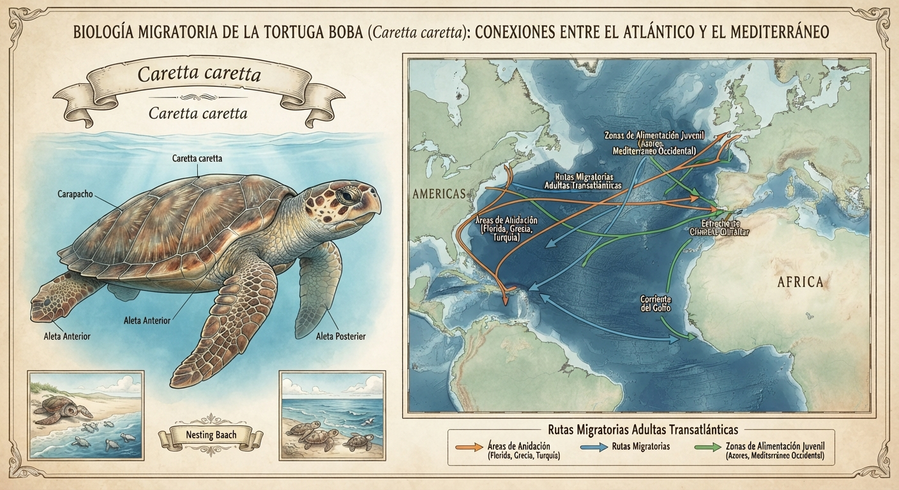

4: Dinámica oceanográfica y corrientes

Este punto aborda la singularidad física del mar, caracterizado por la entrada constante y superficial de agua fría y menos salada procedente del Atlántico a través de Gibraltar.
Esta masa de agua genera un sistema dinámico de corrientes circulares en sentido antihorario (los conocidos giros anticiclónicos y ciclónicos de Alborán).
Estas corrientes provocan fenómenos de afloramiento (upwelling), ascendiendo nutrientes desde las profundidades que alimentan al fitoplancton y sustentan toda la cadena trófica de la región.

